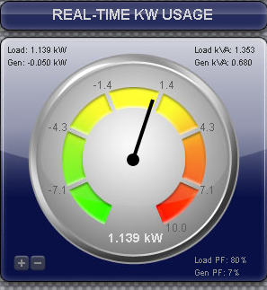

Hi.
Today I installed my Solar system that I'm monitoring with my EmonPi + EmonCMS.
2x 260W Panels
1x 500W APS Inverter
Today I got a peak production of 431W.
I was expecting zero production during the night or even some consumption but there is an almost permanent 3W production (sometimes drops to 2W).
At the beginning I thought this was interference picked up by the CT sensor (I noticed that if one sensor is close to an hi power/intensity cable, it will pick some reading from it), but I think that there is nothing in the vicinity of the CT sensor that could cause this.
Then I made a small test that seems to confirm the 3W reading: if I switch off the circuit breaker that I have exclusively for the solar panels, the reading drops to absolute zero.
In this CT sensor I pass the live wire 10 times and the W reading is divided by ten in the EmonPi firmware, I think this would even reduce the possibility of the CT sensor to pick up any interference because the interference would be divided by 10 also.
Is this normal?
Cheers.
Re: Energy production during the night.
My guess would be that it is a very small consumption but highly reactive. A small phase error can push that near vertical phasor into the next quadrant, making the real component appear negative rather than positive.
Re: Energy production during the night.
I thought of something like that (even don't fully understanding the explanation), but in that case I would think of some erratic reads like some negative, some positive and some zero but this is very consistent.
I know that there isn't absolute absence of light outside, but I'm more inclined to your explanation that of the ghost night production.
I think I will put a rule in the input feed (or pi firmware) forcing it to be zero if lower then 4W, what do you think of that?
Best Regards.
Re: Energy production during the night.
Assuming it's not noise related (and given it goes to 0W when you flip the breaker it doesn't sound like it is) I'd expect the inverter and the phase error to be pretty much steady state throughout the night. You can see in the attached pic, my inverter sits at 2.55W (consumption) throughout the night... varying by only about 200mW.
Your proposed solution sounds good to me.
Re: Energy production during the night.
Is this normal?
Yes, raised many times in the past, and reason as described by dBC.
In emoncms v9.x, you can easily overcome this by adding a couple of processes to your solar input;
If >, skip next (Criteria set to 5)
Reset to ZERO
Log to feed
This will check the input, and if it's less than 5, it will log the value as zero, if it's 5 or more - it will log the input value.
Pre v9 a lot of us hard coded that criteria into the software.
Paul
Re: Energy production during the night.
What value of burden resistor are you using? Even with ten turns around the CT, the maximum 'power' that the CT will be seeing is only 5 kW. With the standard "whole-house" burden value of 22R, that signal will only be spanning a small fraction of the ADC's input range.
When the measurement system is optimally scaled for the largest value that it will ever see, the low-signal performance should be much improved.
If ten independent measurements are taken and averaged, I would expect the noise component to be reduced. But in this case, the number of measurements is not being increased; each one just has a x10 magnitude. So I doubt whether the extra CT turns will significantly reduce the noise.
Re: Energy production during the night.
I think CidiRome is talking about interference from nearby heavily loaded conductors. By looping his conductor of interest through the CT ten times, he's made himself more sensitive to that signal, and less sensitive to the nearby conductors (in as much as any power they do manage to inject will get divided by 10).
Re: Energy production during the night.
Understood. It all depends on the source of the virtual power that is being reported. Is it a genuine signal from somewhere, or quantisation noise from the ADC?
Re: Energy production during the night.
Hi.
I believe that it is not noise (it disappears with the breaker off).
I changed my emonPi firmware so it take readings every second and returns the average every five seconds.
I know this causes the reading from very low to very high (and vice-versa) to have an middle reading in the between, but I'm happy with this because it, will also probably read small bursts of power and consider them in the average that otherwise wouldn't be read.
Cheers.
Re: Energy production during the night.
That seems a strange way to overcome the issue which you initially raised.
Surely if 'there is an almost permanent 3W production', then averaging this will still result in a 3W reading during the night.
Paul
Re: Energy production during the night.
I believe that it is not noise (it disappears with the breaker off).
What is this circuit-breaker supplying? Presumably not the panels which generate DC.
Are you monitoring voltage as well as current? If not, then any night-time consumption by the inverter would be recorded as generation.
Re: Energy production during the night.
Hi.
The breaker is exclusively for the micro-inverter (obviously not for the DC connection between the inverter and the Panels, otherwise it would have to be two breakers anyway, and I thought of disconnecting the panels from the inverter, but I don't want to go to the roof at night only for that).
I have also the AC-AC transformer on my EmonPi, so I'm monitoring the voltage too and I'm getging negative reading on the grid CT sensor when I'm wasting power to grip, so it seems to be working correctly;
Paul Reed:
What is the issue I raised? Why is it strange? Can you elaborate?
Cheers.
Re: Energy production during the night.
"My guess would be that it is a very small consumption but highly reactive."
"[but I] don't fully understanding the explanation."
What dBC is saying is that some power supplies appear to be almost a pure capacitor. In a pure capacitor, the current waveform is displaced exactly 90° from the voltage waveform. When the two are multiplied together to calculate the power, each quarter-cycle cancels the adjacent one, so the average power over one cycle is zero. If there is a small error in your measurement (as there almost certainly will be - that's what the power factor calibration is there to remove, but the error varies with both current and voltage so it's impossible to get it right all the time), then the two waveforms won't appear to be exactly 90° apart and so there will be a small amount of power recorded. Depending on which way the error is, that power can appear either as consumption or as generation (which it is in your case).
If you look here and think that your case is mid-way between diagrams 1 & 4, you can imagine how the power wave will sit exactly balanced across the zero line and average to zero.
Re: Energy production during the night.
I get a constant 18W in the dark on my 19-panel Enphase M250 system. I had assumed in my ignorance of this stuff that this was related to the inverters always outputting 1V at some negligably low low current to let installers see how many inverters there are before they are paired and configured and allowed to generate - and this continuing when they are not generating but see grid power. Makes more sense, sort of, now.
I had been just doing -18 in the feed, but I like the test and skip option so I will move to that - thanks Paul Reed.
Re: Energy production during the night.
I get a constant 18W in the dark on my 19-panel Enphase M250 system.
I have 30 M215s and 10 M250s.
At night, the reading is 48W, but the power factor is .07 so I don't pay much attention to it.
Re: Energy production during the night.
Is that 48W real, or 48VA apparent?
Re: Energy production during the night.
My Ted 5000 reports it as "-0.05kW" and "0.680kVA"

Re: Energy production during the night.
Wow... that's a fair chunk of current for something that's not doing anything.
Re: Energy production during the night.
Remember - it's 40 of them! But it's mostly only circulating vars. The power company won't be too happy about that, though, because they've got to top up the transformer losses and they can't charge Bill for it.
Re: Energy production during the night.
I'm getting 170w during the night. Again, enphase micro inverters! Must be noise. Not sure how I'm supposed to clean it up though! Electrics in loft are a rats nest. (I have 14 inverters)
Re: Energy production during the night.
Solved. I didn't plug in the AC-AC adapter first, then after it had booted plugged in my CTs
Re: Energy production during the night.
?
If you are using the standard emonTx sketch, it detects sensors at boot, and locks out those it doesn't see. Are you sure all your sensors are being read, because a CT plugged in after the sketch is running will always read zero.
Re: Energy production during the night.
Robert: If think in EmonPi that doesn't apply.I think it counts the sensors on boot but only uses the counting for display... but this is only what I remember of the code, I didn't double check,,,
Cheers.
Re: Energy production during the night.
We do not know what timneo is using, so your statement, though accurate, might well be totally misleading.
Re: Energy production during the night.
Hi.
Yes you are right, I agree with you, sorry
So, by what you say, the EmonTX disables the CTs on boot if disconnected... I haven't seen the EmonTX code, always based my investigation on EmonPi.
Re: Energy production during the night.
Yes, I have an emonPi
Funnily enough after I did this, my PV reading went negative. Saw a comment that I needed to reverse the cable clip so I did that this morning.
Now the mains power is negative (and I didn't touch that one...)
So something is still amiss :)
Re: Energy production during the night.
Let's start at the beginning. Whether power/energy is imported or exported depends on the relative phase of voltage and current. Our convention is that import is positive and export is negative.
If your voltage input is capable of being reversed - UK plugs cannot be, but others can be - then reversing the ac adapter in its socket will reverse the phase of the voltage with respect to both currents and that will reverse the sign of BOTH CT1 and CT2 inputs.
Reversing a CT on its cable will reverse the phase of that current with respect to the voltage and that will reverse the sign of only that input.
So, this is the procedure I recommend:
1. If your ac adapter can be reversed in the socket, LABEL IT "This way up" or something like that.
2. Put both CTs on one cable - the PV if you're generating so that you know the direction of power - and check that both read the same and both are positive.
3. Transfer the 'grid' CT to your incomer, making sure it faces the same way, i.e. the side that was towards your inverter points towards the grid.
Re: Energy production during the night.
It's OK, I think there was just a mislabelling event going on.
I now have everything working well
However emoncms.org (or at least my session) is a bit flakey.
I keep loosing dials or the main "apps" suddenly stop working. No idea what's up with it, but logging off, closing my works aged version of firefox and logging back in sometimes fixes it.